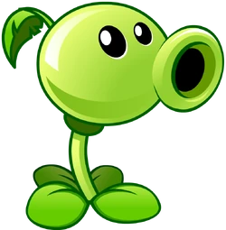
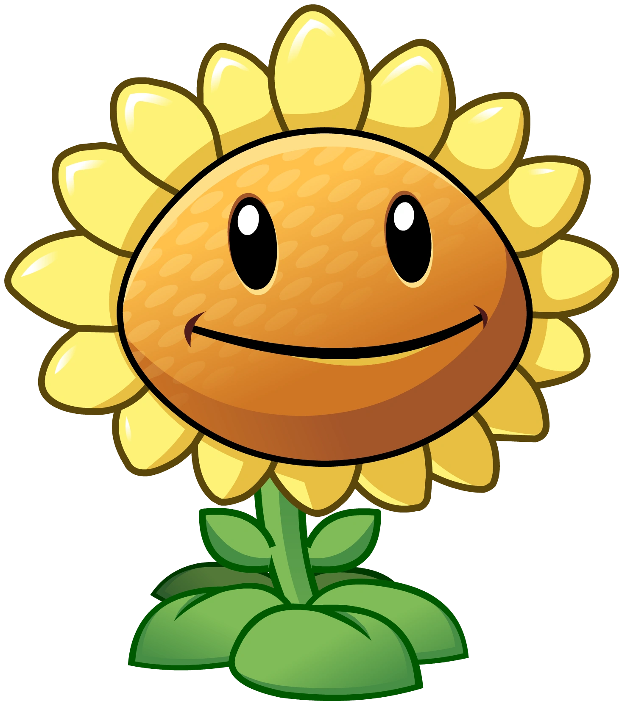
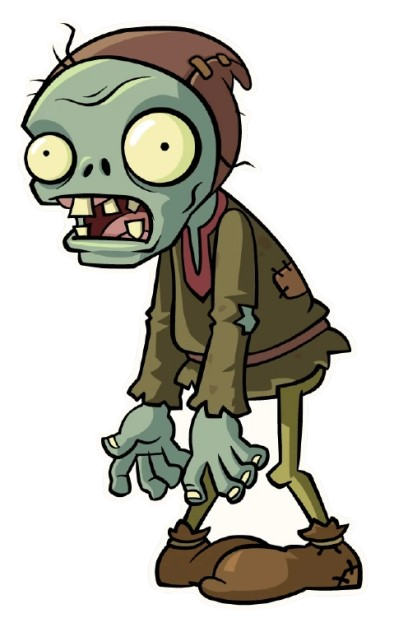
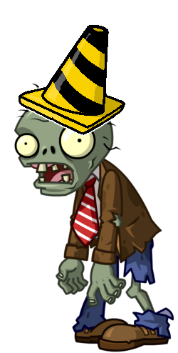

Lanzaguisantes es una planta básica que dispara guisantes en línea recta para dañar a los zombis.
Es la primera línea de defensa en muchos jardines y su costo de sol es bajo.

Girasol genera sol periódicamente, lo que permite plantar más defensas en el jardín.
Sin suficientes girasoles, el jugador se queda sin recursos para detener a los zombis.

El zombi básico camina lentamente hacia la casa del jugador e intenta cruzar todas las defensas.
Aunque es débil por sí solo, puede ser peligroso si aparece en grandes grupos.

El zombi con cono tiene más resistencia gracias al cono que lleva en la cabeza.
Se recomienda usar más plantas de ataque o plantas más fuertes para detenerlo.